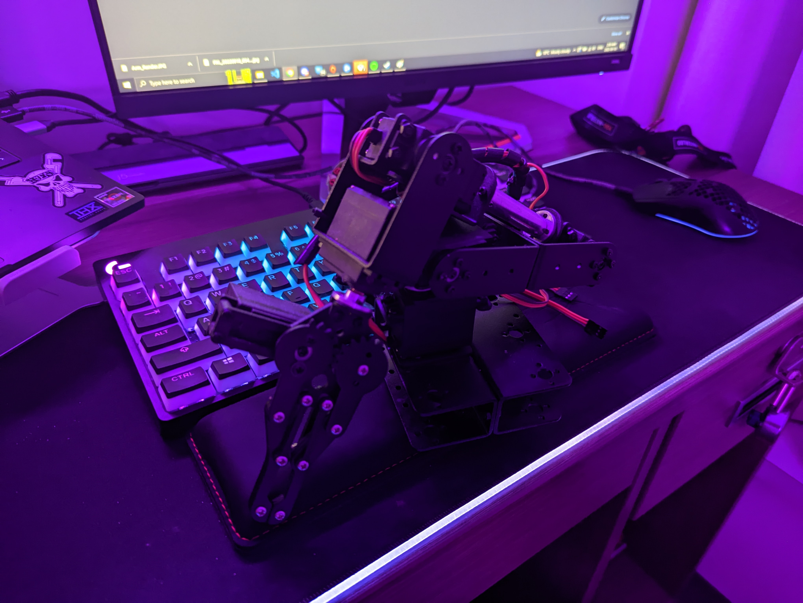

Robotic Excessive Autonomously Controlled Helper
While working at Taiga Robotics, I wanted to create something that trained my newly aquired skills in machine learning, ROS, and robotic arms. I didn't really have anything cool for it to do, but I thought it was really funny if it just did the most mundane tasks with more precision than needed. Currently, I'm working on adding an XBOX Kinect for computer vision, that way it can identify pepper.

Features
To most effectively move salt, this arm needed:
- 6 Degrees of freedom.
- ROS based PID control system.
- Salt.